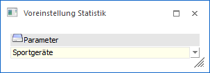
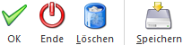

Durch die Anwahl des Buttons "Parameter" im Programm "Verkaufsstatistik" können die getroffenen Selektionen gespeichert bzw. geladen werden.
Hinweis
Bei der Speicherung und beim Laden werden die Zusatzselektionen (Button "Selektion" im Programm "Verkaufsstatistik") ebenfalls berücksichtigt.

Ø Parameter
Aus der Auswahlbox "Parameter" können bereits gespeicherte Voreinstellungen gewählt werden. Soll eine neue Voreinstellung gespeichert werden, so wird an dieser Stelle der Name gewünschte Name hinterlegt.
Buttons

Ø Ok
Durch Anwahl des Buttons "Ok" bzw. der Taste F5 wird die ausgewählte Voreinstellung geladen.
Ø Ende
Durch Drücken des Buttons "Ende" bzw. der Taste ESC wird das Fenster geschlossen.
Ø Löschen
Mit Hilfe des Buttons "Löschen" kann die gewählte Voreinstellung gelöscht werden.
Ø Speichern
Durch Anwahl des Buttons "Speichern" werden die aktuell vorhandenen Selektionen und Einstellungen gespeichert.